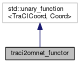
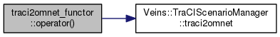

traci2omnet_functor Struct Reference
Inheritance diagram for traci2omnet_functor:

Collaboration diagram for traci2omnet_functor:

Public Member Functions | |
| traci2omnet_functor (const TraCIScenarioManager &m) | |
| Coord | operator() (const TraCICoord &coord) const |
Public Attributes | |
| const TraCIScenarioManager & | manager |
Detailed Description
Definition at line 41 of file TraCIScenarioManager.cc.
Constructor & Destructor Documentation
|
inline |
Definition at line 42 of file TraCIScenarioManager.cc.
const TraCIScenarioManager & manager
Definition: TraCIScenarioManager.cc:48
Member Function Documentation
|
inline |
Definition at line 44 of file TraCIScenarioManager.cc.
Coord traci2omnet(TraCICoord coord) const
convert TraCI coordinates to OMNeT++ coordinates
Definition: TraCIScenarioManager.cc:448
const TraCIScenarioManager & manager
Definition: TraCIScenarioManager.cc:48
Here is the call graph for this function:

Member Data Documentation
| const TraCIScenarioManager& traci2omnet_functor::manager |
Definition at line 48 of file TraCIScenarioManager.cc.
Referenced by operator()().
The documentation for this struct was generated from the following file: